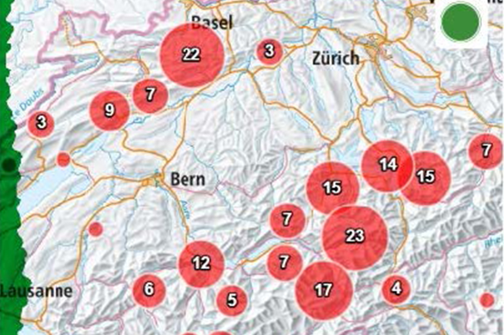
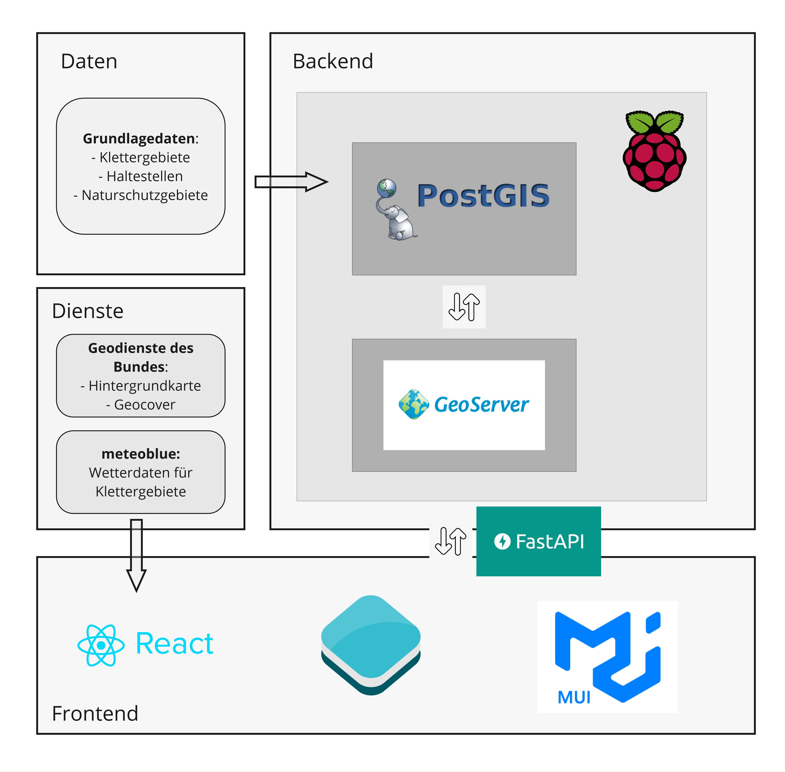

openClimbingMap
Open-Source-Webanwendung zum Entdecken und Verwalten von Klettergebieten in der Schweiz auf Basis von Geodaten. Die Anwendung verfügt über ein Front- und Backend.

Demo öffnenProjektübersicht
openClimbingMap bündelt eine interaktive Kartenansicht, Filterfunktionen und Standortinformationen in einem schlanken Projekt-Hub. Die vollständige Anwendung und der Quellcode sind extern verlinkt.
Funktionen
- Interaktive Karte mit Klettergebieten
- Filterung nach Schwierigkeit, Anzahl Routen, Höhe und Erreichbarkeit
- Neue Klettergebiete mit Koordinaten hinzufügen
- Wetterintegration pro Standort
- Layer-Unterstützung für Naturschutzzonen und gesperrte Gebiete
Systemarchitektur
Systemarchitektur

Funktionsweise
- Frontend
- React + Leaflet
- Backend
- FastAPI + PostGIS + GeoServer
- Routing
- pgRouting
- Datenquellen
- OpenStreetMap, Weather API